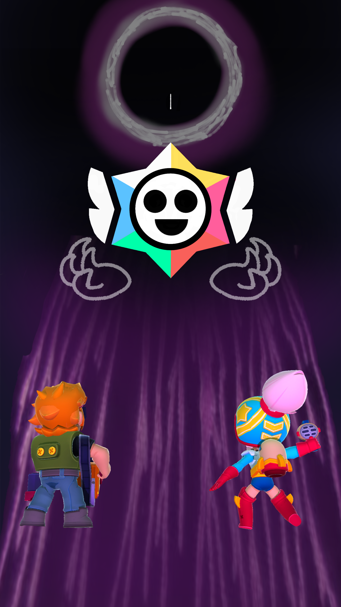

Ven a Starr Park con nosotros, te encantara tanto que jamas querras irte....

Brawl stars: The black hole AU Creado/a por Razor216
Diferencias

- La isla de Starr Park jamas fue reconocida y apenas fue habitada antes de la llegada de este.

Nunca me gusto mucho la idea de que Starr Park haya sido abitado antes y hubieran personas, siento que no queda por como las gemas funcionan, aunque si hubieron algunas no reconocidas por los humanos, Juju y Sirius fueron de los pocos brawlers que estuvieron desde siempre en la isla.
- La adición de Sun, Ceo y una nueva zona.

Sun ya es explicada en personajes, pero la adición de ella fue añadida para darle una fuerza antagonica a Starr park, al canon le falta uno.
Y se agrego una zona "little big garden" que agregue cuando me cole personajes de otro juego :p
- Algunas personalidades, Motivaciones y EDADES, fueron cambiadas o establecidad para la construcción de mundo.
Estan son aclaradas en personajes, pero esto se hace para acomodar mejor a los brawlers a este AU ELLOS NO SON IGUALES A LOS CANONICOS.
- La historia del presenta pasa en los 2000 y no en los 90.

Simplemento no, no tiene sentido ;-;
- No hay "humanos"